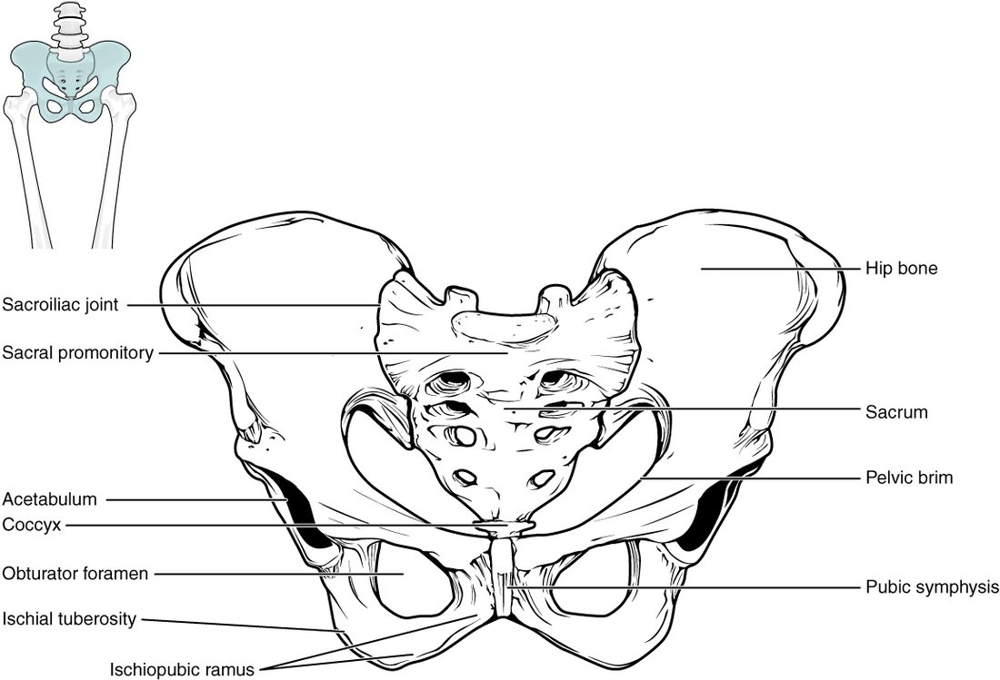
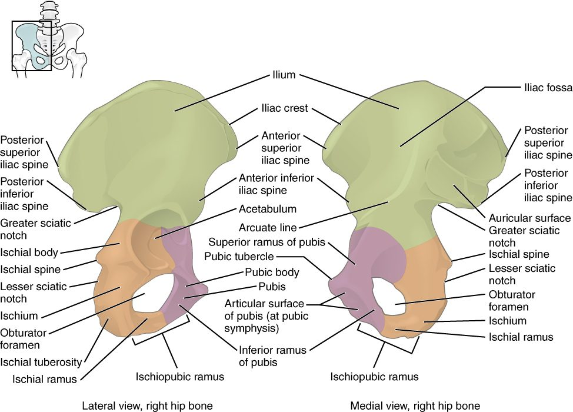
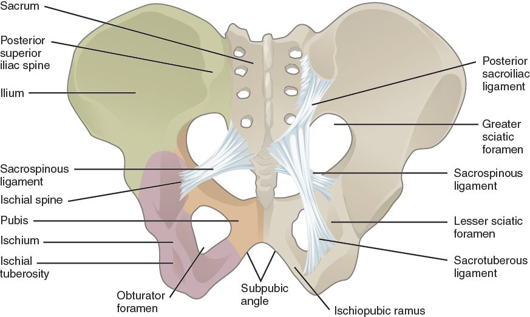
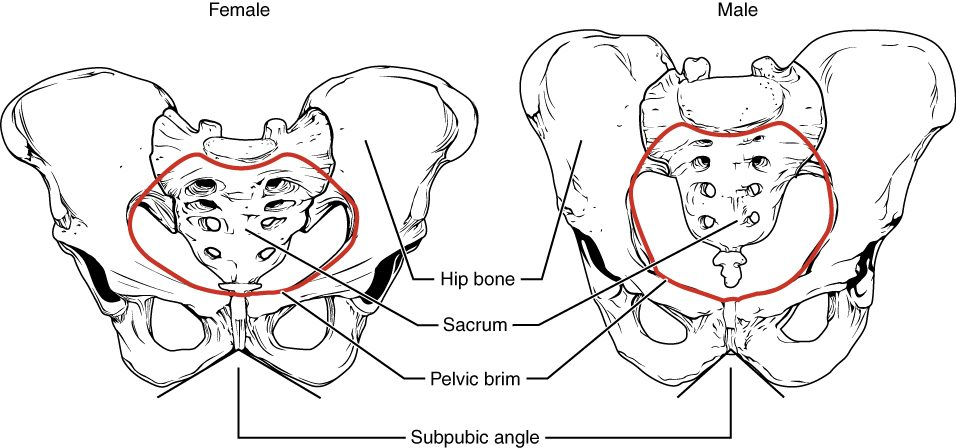
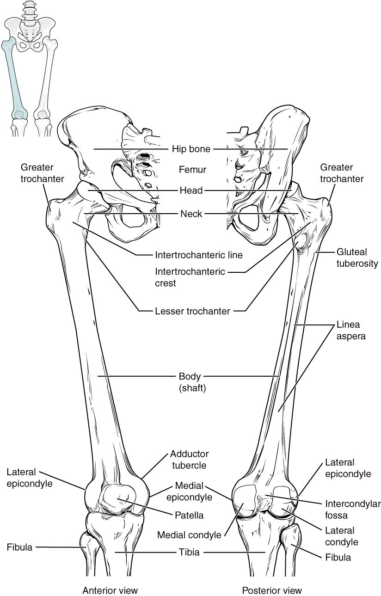
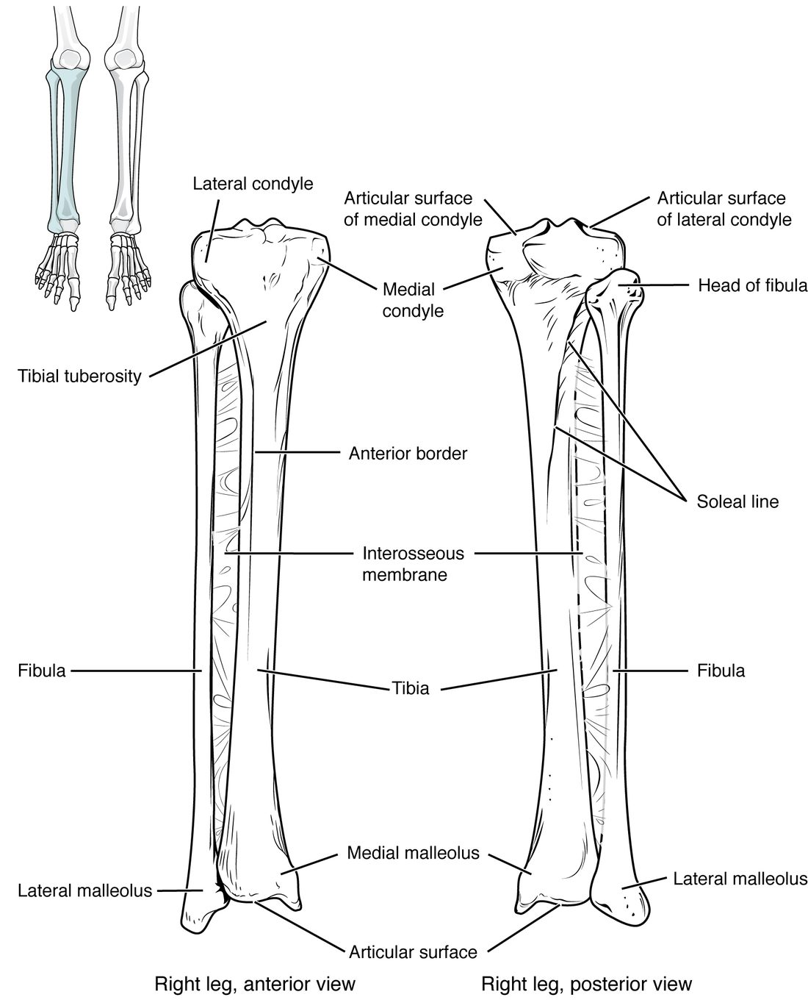
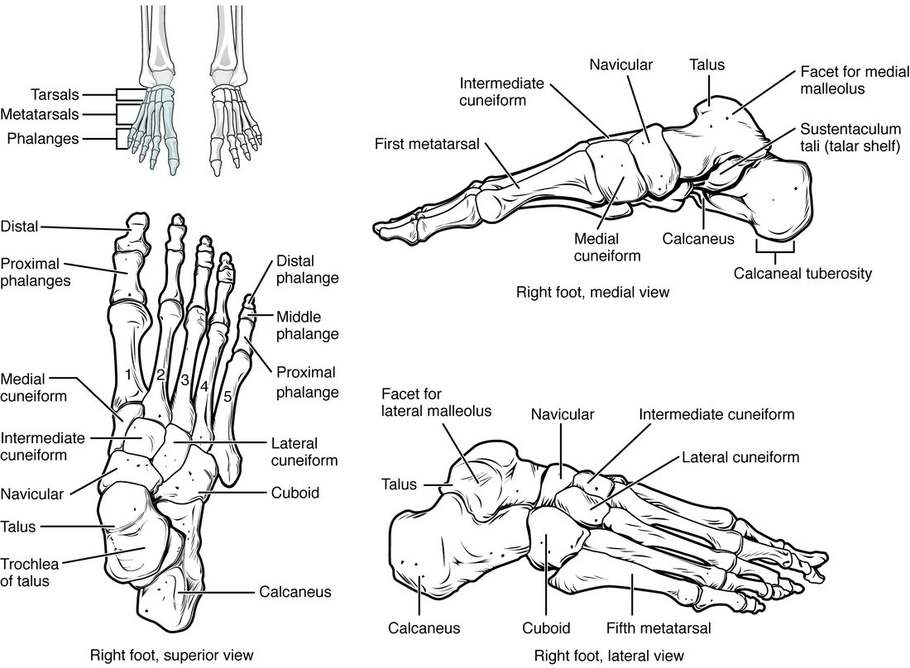
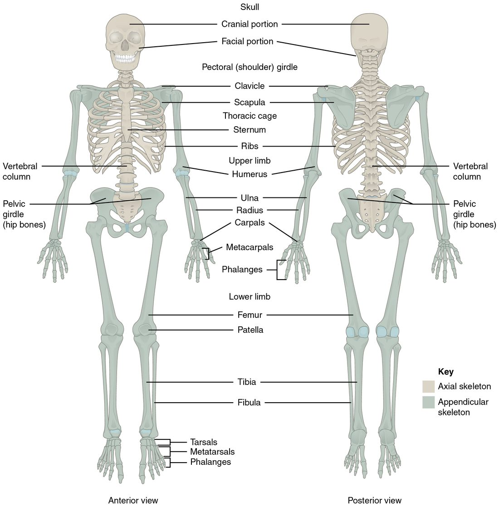

Every step you take puts your whole body weight on one leg, and every jump puts several times that weight through it. The bones of the pelvis and legs are built for that load: thicker, heavier and more firmly locked together than the bones of the arm. This page gives you the pelvis and leg bones labeled and explained: the hip bones and the bony pelvis, how female and male pelves differ, the femur, the patella, the tibia and fibula, and the 26 bones of the foot.
The lower limb at a glance
Each lower limb is part of the appendicular skeleton. It has 30 bones, plus the hip bone that attaches it to the trunk. In anatomy, "thigh" means the part between the hip and the knee, and "leg" means only the part between the knee and the ankle.
- Pelvic girdle (1 on each side): the hip bone.
- Thigh (1): the femur.
- Knee (1): the patella.
- Leg (2): the tibia and the fibula.
- Ankle and foot (26): 7 tarsals, 5 metatarsals and 14 phalanges.
The plan matches the upper limb bone for bone: one bone in the thigh like the humerus, two in the leg like the radius and ulna, then a group of short bones, five long bones and 14 phalanges. The differences are in size and in how firmly the parts are locked together.
The pelvic girdle
The pelvic girdle is the pair of hip bones (each also called a coxal bone; cox- = hip). Unlike the shoulder girdle, it is a strong, complete ring (Figure 1). At the back, each hip bone meets the sacrum, held by some of the strongest ligaments in the body. At the front, the two hip bones meet each other at the pubic symphysis (sym- = together, -physis = growth), where a pad of fibrocartilage joins them.
The two hip bones plus the sacrum and coccyx together make the bony pelvis (pelvis = basin). The shoulder girdle trades stability for movement. The pelvic girdle does the reverse: it moves very little, and it passes the weight of the trunk to the legs.

The three parts of each hip bone
A child's hip bone starts as three separate bones joined by cartilage. They fuse during the teen years into one bone, but their names stay as the names of its three regions (Figure 2). All three meet in the acetabulum (acetabulum = vinegar cup), the deep socket on the outer side of the hip bone where the head of the femur fits.
- The ilium (ilium = flank) is the large, fan-shaped upper part. Its curved upper edge, the iliac crest, is what you feel when you put your hands on your hips. The front end of the crest is the anterior superior iliac spine, a bony point at the front of your hip, and its back end is the posterior superior iliac spine, which lies under the dimples above your buttocks. Below the back of the ilium is a deep notch, the greater sciatic notch.
- The ischium (ischion = hip) is the lower back part. Its thick, rough base is the ischial tuberosity: when you sit, you sit on your two ischial tuberosities. Above it, the pointed ischial spine juts inward, between the greater sciatic notch and a smaller notch below.
- The pubis (from pubes, the hair that grows over it at puberty) is the lower front part. The two pubic bones meet at the pubic symphysis.
Below the acetabulum, the pubis and ischium surround a large hole, the obturator foramen (obturare = to stop up). A sheet of membrane closes almost all of it, leaving a small gap where a nerve and vessels pass into the thigh.
Two landmarks have everyday clinical uses. The iliac crest near the posterior superior iliac spine is where clinicians take samples of red bone marrow, because the bone there is thick, rich in marrow and close under the skin. A hard blow to the iliac crest, common in contact sports, bruises it painfully.

The pelvic ligaments
Two strong ligaments run from the side of the sacrum to the ischium on each side (Figure 3).
- The sacrospinous ligament runs to the ischial spine.
- The sacrotuberous ligament runs to the ischial tuberosity.
The weight of the trunk presses down on the top of the sacrum, in front of where it meets the hip bones, which tends to tip its upper end forward and its lower end backward. These two ligaments hold the lower end of the sacrum down, which resists the tipping. They also turn the two sciatic notches into two holes, the greater and lesser sciatic foramina, through which nerves and vessels pass from the pelvis to the buttock and thigh.

The male and female pelvis
Greater and lesser pelvis
A curved rim of bone runs around the inside of the pelvis, from the sacral promontory at the back, along each hip bone, to the top of the pubic symphysis in front. This is the pelvic brim. It divides the bony pelvis into two parts.
- The greater pelvis (or false pelvis) is the wide space above the brim, between the flared wings of the ilia. It is really the lowest part of the abdominal cavity.
- The lesser pelvis (or true pelvis) is the narrower space below the brim. It holds the bladder, the rectum and, in females, the uterus, and it is the bony birth canal.
The lesser pelvis has two openings. The pelvic inlet is the upper opening, outlined by the pelvic brim. The pelvic outlet is the lower opening, bounded by the tip of the coccyx behind, the ischial tuberosities at the sides, and the pubic arch in front. The pubic arch is the arch formed below the pubic symphysis by the two bony bars that run from the pubis back to the ischium; the angle at its top is the subpubic angle.
How they differ
Before puberty, girls' and boys' pelves look much the same. During puberty they grow apart, and by adulthood the average female pelvis is wider and shallower, with a larger, rounder lesser pelvis (Figure 4). The result is a wider birth canal. The average male pelvis is narrower, deeper and heavier, with rougher markings where larger muscles anchor.
| Female pelvis | Male pelvis | |
|---|---|---|
| Overall build | Lighter, thinner bones | Heavier, thicker bones with rougher markings |
| Depth of the lesser pelvis | Shallow | Deep |
| Iliac wings | Flare out more | More upright |
| Pelvic inlet | Wide, round or oval | Narrower, heart-shaped |
| Subpubic angle (pubic arch) | Wide: about 80 to 90 degrees or more, like the angle between thumb and index finger | Narrow: about 50 to 60 degrees, like the angle between index and middle finger |
| Ischial spines and tuberosities | Farther apart | Closer together |
| Sacrum | Shorter, wider and less curved | Longer, narrower and more curved |
| Obturator foramen | Oval to triangular | Round |
These are averages. Individual pelves overlap, and a forensic expert judging sex from a skeleton weighs several features together, with the subpubic angle and the shape of the pubic bones among the most reliable.

The femur
The femur (femur = thigh) is the longest, heaviest and strongest bone in the body (Figure 5). Its landmarks, from top to bottom:
- The head of the femur (femoral head) is the smooth ball that fits deep into the acetabulum.
- The neck of the femur (femoral neck) joins the head to the shaft at an angle of about 125 degrees. That angle sets the shaft out from the pelvis, but it also makes the neck the bone's weak point.
- The greater trochanter is the large bump on the lateral side where the neck meets the shaft. It is the bony point you feel on the side of your hip. The lesser trochanter is a smaller bump lower down on the back and inner side. Both anchor large muscles of the hip.
- The linea aspera (rough line) runs down the back of the shaft, where many thigh muscles anchor.
- At the knee, the medial condyle of the femur and lateral condyle of the femur are two large rounded knobs that rest on the tibia. Between them at the back is a deep notch, and on the front is a smooth groove where the patella glides.
The shafts of the two femurs slope inward from the hips toward the knees, so the knees sit close together under the body. Because the female pelvis is wider, the slope is usually steeper in females.
In older adults, a fall onto the side of the hip often breaks the femoral neck or the bone between the two trochanters. This is what most people mean by a "broken hip". The blood vessels to the femoral head run up along the neck, so a displaced neck fracture can cut off the head's blood supply, and the head may die unless it is fixed or replaced quickly.

The patella
The patella (patella = small dish), the kneecap, is a triangular bone at the front of the knee. It is the largest sesamoid bone: it forms inside the tendon of the large muscle group on the front of the thigh. Its back surface glides in the groove on the front of the femur. Because the patella holds the tendon away from the knee's center of turning, the muscle pulls with more leverage when it straightens the knee. It also shields the front of the knee from blows.
The tibia and fibula
The leg has two long bones side by side (Figure 6). The tibia is medial and large; the fibula is lateral and thin.
The tibia
The tibia (tibia = shinbone, flute) carries almost all the weight from the femur to the foot.
- At the top, the flat medial condyle of the tibia and lateral condyle of the tibia form a broad surface on which the femoral condyles rest.
- The tibial tuberosity is the bump on the front of the tibia just below the knee. The tendon running down from the patella anchors here.
- The sharp front edge of the shaft is your shin. Only skin covers it, which is why a knock on the shin hurts so much and why an open fracture of the tibia is common.
- At the bottom, the medial malleolus (malleolus = little hammer) is the bump on the inner side of your ankle.
The fibula
The fibula (fibula = clasp, pin) is a thin bone alongside the tibia. It does not reach the femur and is not part of the knee.
- The head of the fibula sits just below the lateral condyle of the tibia, on the outer side, below the knee.
- The lateral malleolus is its lower end, the bump on the outer side of your ankle. It sits lower than the medial malleolus.
The two malleoli grip the sides of the talus, the top bone of the foot, like the jaws of a wrench. That grip keeps the ankle from sliding sideways. A bad ankle twist often breaks one or both malleoli.
The fibula carries only a small share of body weight, roughly 6 to 17 percent depending on the position of the ankle. Its main roles are to anchor muscles and to form the outer side of the ankle.
| Tibia | Fibula | |
|---|---|---|
| Side of the leg | Medial | Lateral |
| Size | Large and thick | Thin |
| Part of the knee? | Yes: its condyles carry the femur | No: its head sits below the knee |
| Share of body weight | Almost all | A small share, about 6 to 17 percent |
| Ankle bump | Medial malleolus | Lateral malleolus (lower) |

The bones of the foot
The ankle and foot have 26 bones in three groups (Figure 7).
The tarsals
The seven tarsals (tars- = ankle), or tarsal bones, form the ankle and the back half of the foot.
- The talus (talus = ankle) sits on top. It is the only foot bone that meets the leg: the tibia rests on it from above and the two malleoli grip its sides. It passes the body's weight down and back to the heel and forward to the rest of the foot.
- The calcaneus (calc- = heel) is the heel bone, the largest tarsal, below the talus. The thick tendon of the calf muscles anchors to the back of it.
- The navicular (navicul- = little boat) sits in front of the talus, on the inner side of the foot.
- The cuboid (cube-shaped) sits in front of the calcaneus, on the outer side of the foot.
- The three cuneiforms (cune- = wedge), the medial cuneiform, intermediate cuneiform and lateral cuneiform, sit in a row in front of the navicular.
A memory aid, from the back of the foot: "Tiger Cubs Need MILC": talus, calcaneus, navicular, then the medial, intermediate and lateral cuneiforms, and the cuboid.
The metatarsals and phalanges
- The five metatarsals (metatarsal bones) form the middle of the foot, numbered 1 to 5 from the big toe. Their heads form the ball of the foot. The second and third metatarsals are thin and long, and repeated running can crack them, a stress fracture.
- The fourteen phalanges of the toes follow the same pattern as the hand. The big toe, the hallux (hallux = big toe), has two phalanges; each other toe has three.

The arches of the foot
Look at a wet footprint: the middle of the inner edge leaves no mark. The bones of the foot are arranged in arches, not laid flat.
- The medial longitudinal arch is the high arch along the inner side, from the calcaneus through the talus, navicular and cuneiforms to the first three metatarsals.
- The lateral longitudinal arch is a low arch along the outer side, from the calcaneus through the cuboid to the fourth and fifth metatarsals.
- The transverse arch runs across the foot, through the cuneiforms, the cuboid and the bases of the metatarsals.
The wedge shapes of the bones, the ligaments between them, the tendons of leg muscles, and the plantar aponeurosis (plant- = sole) hold the arches up. The plantar aponeurosis is a thick sheet of dense connective tissue on the sole, running from the calcaneus forward to the toes like the string of a bow. When you stand, weight presses the arches flatter, which stretches the plantar aponeurosis and the ligaments; when the weight comes off, they recoil. This spreads your weight between the heel and the ball of the foot and gives each step some spring. If the arches stay low, the foot is a flat foot. When the plantar aponeurosis is strained where it anchors to the calcaneus, the result is plantar fasciitis: heel pain that is worst with the first steps in the morning.
Putting the skeleton together
You have now met every bone of the skeleton. Look back at the whole skeleton (Figure 8) and name each bone, then sort it into the axial or appendicular skeleton.

Summary
The pelvic girdle is the two hip bones, each formed from the ilium, ischium and pubis, which meet at the acetabulum. The hip bones meet the sacrum at the back and each other at the pubic symphysis; with the sacrum and coccyx they form the bony pelvis. Landmarks include the iliac crest, the anterior and posterior superior iliac spines, the greater sciatic notch, the ischial spine and tuberosity and the obturator foramen, and the sacrospinous and sacrotuberous ligaments. The pelvic brim divides the greater from the lesser pelvis; the female pelvis is on average wider and shallower, with a round inlet and a wide subpubic angle. The femur has a head, neck, greater and lesser trochanters, linea aspera and two condyles; the patella is a sesamoid bone in front of the knee. The tibia is medial and carries the weight; the thin fibula is lateral. The foot has 7 tarsals (talus, calcaneus, navicular, cuboid and three cuneiforms), 5 metatarsals and 14 phalanges, arranged in three arches supported by the plantar aponeurosis.